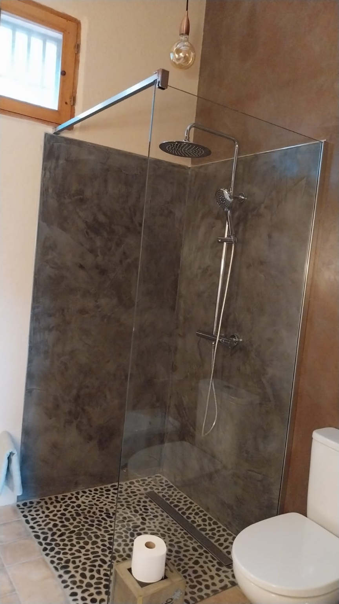
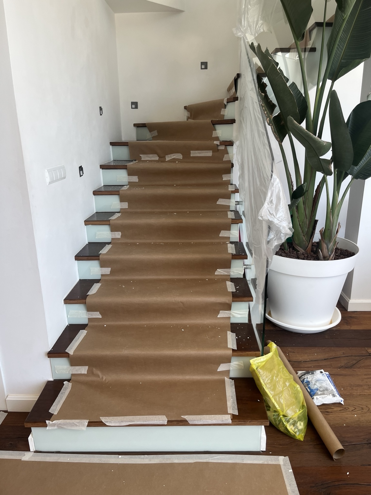

Estructuras
Obra nueva y estructura
Cimentaciones, encofrados, hormigón armado y ejecución por fases.
Reformas integrales, rehabilitación y obra de alta exigencia con control directo de ejecución, soluciones técnicas y acabados cuidados.
Cimentaciones, encofrados, hormigón armado y ejecución por fases.

Baños, porcelánico, instalaciones, carpintería y acabados coordinados.

Teja, impermeabilización, saneado de soportes, morteros y reparación.

No vendemos únicamente metros cuadrados. Analizamos soportes, humedades, fisuras, encuentros, pendientes, compatibilidad de materiales y secuencia de trabajos antes de cerrar una solución.
Demoliciones, albañilería, instalaciones, revestimientos y acabados.
Terrazas, cubiertas, aljibes, encuentros y puntos singulares.
Forrado de piedra, revestimientos, saneados y recuperación de paramentos.
Gran formato, nivelación, preparación de soportes y juntas técnicas.
Teja, aislamiento, impermeabilización y reconstrucción de faldones.
Estructura, cerramientos, coordinación de oficios y ejecución completa.
Sube una foto de tu baño, elige un estilo y genera una propuesta visual con inteligencia artificial. Después estudiamos cómo convertirla en una reforma técnicamente viable.
Un espacio privado para consultar fotografías del avance, planificación por fases, documentación, facturas y garantías de cada proyecto.
Demolición Completado
Instalaciones Completado
Alicatado En ejecución
Pintura Próxima fase
Coordinamos cada proyecto con profesionales especializados cuando la obra lo requiere, manteniendo un único criterio de ejecución y seguimiento.
Energy System · Instalaciones eléctricas, cuadros, reformas, mantenimiento y adecuación de instalaciones.
Visitar web del colaborador →Energy System · Redes de agua, saneamiento, instalaciones de baños, cocinas y mantenimiento.
Visitar web del colaborador →Energy System · Energía solar fotovoltaica, climatización, eficiencia energética y soluciones multiservicio.
Visitar web del colaborador →Los colaboradores son profesionales o empresas independientes que intervienen únicamente cuando el proyecto lo requiere.